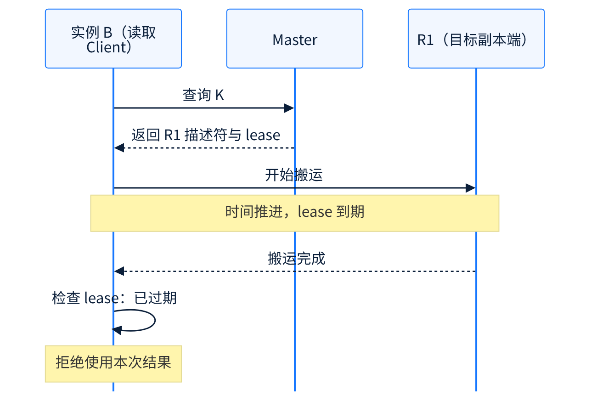
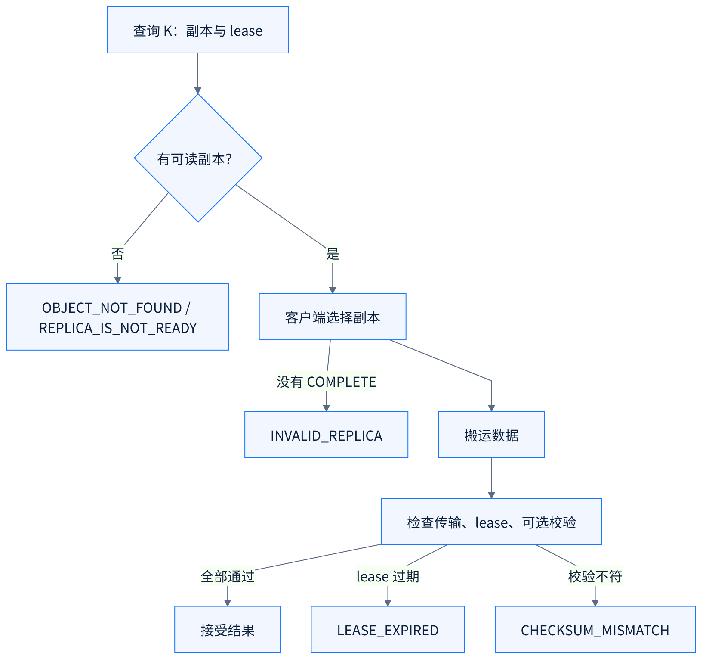

摘要：B 从 R1 读回了字节，这次 Get 仍可能失败。定位、搬完、可接受，是三个不同时刻。
实例 B 查询 key K，Master 返回 R1 的副本描述与一段读保护。
B 开始从 R1 搬运数据。传输很慢，跨过了 lease 的截止时间。字节最终全部到达本地 buffer。
这时候，这次 Get 算成功吗？
答案取决于一个容易被忽略的顺序：数据搬完在前，结果检查在后。 本篇把一次 Get 拆成"已定位、已搬完、可接受"三个时刻，说明为什么读回字节不等于可以接受结果。
读方拿到副本描述后，系统不能马上把对应空间用于其他对象，否则读方可能访问到已被复用的数据。
Lease 提供的正是这个有边界的读取窗口。它保护的不只是地址，而是"在这段时间内，这份数据不会被正常删除或淘汰"。
Master 在返回可读副本列表时授予 lease，并在响应里带上 TTL。客户端不是直接使用 Master 的时间，而是用本地单调时钟的起点加 TTL，算出自己的截止时间。

图注：时间线是「获得描述与读保护 → 开始搬运 → lease 到期 → 搬运完成 → 检查结果」。事后复查发生在 Client::Get 的 TransferRead 与可选 checksum 之后，条件是本地 steady_clock 到达截止点，结果为 LEASE_EXPIRED。该复查适用于经 Client::Get 的路径；v0.3.13.post1 的 LOCAL_DISK 全量 offload 路径直接返回，不经过它。 这里体现的是"尽力读 + 事后否决"：先完成传输，再判断这次读取是否仍在承诺窗口内。
分析：好处是实现简单，不需要在传输前阻塞等待；代价是 lease 过期时已经浪费了一次带宽。对 KV Cache 这种"读失败可以重算"的场景，这个取舍是成立的。
把一次 Get 压缩成四个阶段，会更容易定位问题出在哪：

图注：图把一次 Get 压成四个阶段，分支只标错误类别；具体搬运路径取决于副本介质和目标 buffer。 有两个细节需要说清楚。
第一，Master 只过滤并返回可读副本列表，不替客户端选副本。 选择发生在客户端：
Client::Get 内部调用 FindFirstCompleteReplica，取列表中第一个 COMPLETE 副本；RealClient 的 ranged 路径在进入 Client::Get 之前，用 SelectBestReplica 先选一次，再把副本列表裁成只剩选中的那一个。SelectBestReplica 会跳过非 COMPLETE 副本，优先级是：本地 MEMORY → 本地 NOF_SSD → 远端 MEMORY（可评分）→ 远端 NOF_SSD → LOCAL_DISK → DFS → DISK。
第二，搬运方式取决于介质和目标：
| 副本类型 | 目标 buffer | 路径 |
|---|---|---|
| MEMORY | 主机且可直读 | 交给 Transfer Engine 读到目标 buffer |
| MEMORY | GPU 等设备 | 主机暂存后再复制到目标 |
| LOCAL_DISK | 任意 | 存储节点执行 offload 读取 |
| DISK / DFS | 任意 | 临时 buffer 后再 scatter |
"直读目标 buffer"通常表示避免额外的应用层中转，不是对所有后端、所有设备的零拷贝承诺。TCP、RDMA、GPU 路径内部是否拷贝，要按实际后端判断。
有效期内的 lease 会阻止普通 Remove 与淘汰路径回收这份对象；删除侧遇到的 OBJECT_HAS_LEASE 就是这一保护的证据。
但 lease 到期只代表保护窗口结束，不代表对象立刻被删除。实际回收还要经过淘汰、引用计数、后台任务等一系列判断。
所以不要把两件事混为一谈：
LEASE_EXPIRED：这次读取的结果不再受承诺保护，客户端应拒绝使用；前者是读方看到的错误，后者是资源侧的动作。中间隔着完整的回收判断。
把错误按阶段分开，上层才能决定是重试、换副本，还是重算。
查询阶段
OBJECT_NOT_FOUND：对象不存在，或所有副本都已 REMOVED。应当放弃。REPLICA_IS_NOT_READY：对象存在，但暂时没有可用副本。值得短暂重试。选择阶段
INVALID_REPLICA：列表里没有选到 COMPLETE 副本。搬运与完成检查
INVALID_PARAMS：目标 buffer 小于对象大小。系统不会截断读取，避免调用方误以为读全了。LEASE_EXPIRED：字节可能已经读到，但结果不再受保护。按可重试错误处理，而不是数据损坏。CHECKSUM_MISMATCH：仅在启用 checksum 且期望值不符时出现。该校验默认关闭，不要写成默认路径。错误分类越准确，越容易判断问题发生在查询、选择、搬运还是完成检查阶段。
回到开头那条主线：A 算出前缀 KV，以 key K 写入共享缓存；Master 先分配 R1 并置为 PROCESSING，A 搬运完成后用 PutEnd 把 R1 发布为可读；B 查询到 R1 与 lease，搬运数据，再检查传输、校验与 lease，全部通过才接受结果。
下一篇回到源码入口，看看怎样用这套思路追一条读写链路。
源码延伸：原系列篇3；Client::Get、QueryResult::IsLeaseExpired、SelectBestReplica、GetReplicaList。版本基线为 v0.3.13.post1。
[源码解析版](../../03-get-path.md) · [系列目录与排版说明](README.md)
[上一篇](03-put-visibility.md) · [下一篇](../05-source-reading.md)